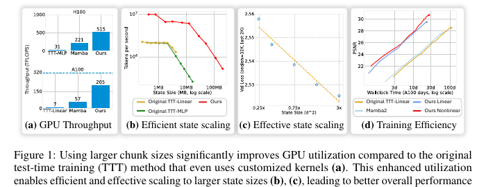
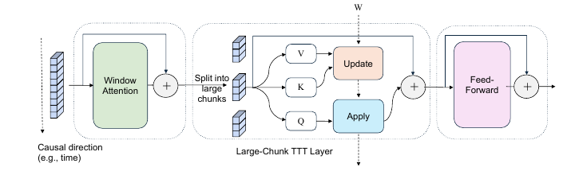
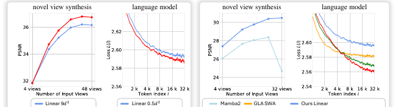
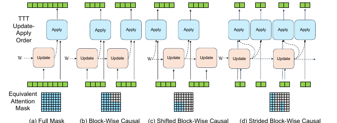
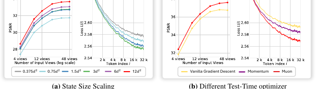
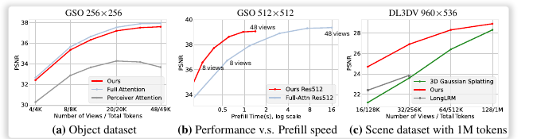
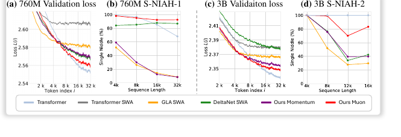
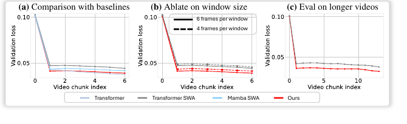

一句话总结
LaCT 的核心不是发明另一种“记忆”机制，而是重新组织 TTT 的计算粒度： 用 2K 到 1M token 的大 chunk 聚合梯度、统一更新快速权重，从而把 TTT 从小步在线更新变成硬件友好的长上下文记忆层。
从很小的在线更新变成大块聚合更新。
论文报告可在 A100 上显著提高硬件利用率。
最大可达到主模型参数量约 40%。
适配自回归视频扩散模型。
处理最长约 56K visual tokens。
传统 TTT 的瓶颈
原始 TTT 的出发点很漂亮：普通 RNN 把历史压进一个隐藏向量，表达能力有限；那能不能把一个小型神经网络当作隐藏状态，
用快速权重 W 直接存储上下文记忆？每来一小段 token，模型就用自监督损失更新快速权重，再用当前 query 读出记忆。
W_{t+1} = W_t - eta * grad_W L_t
o_t = f_{W_t}(q_t)
问题在于，早期 TTT 往往每 16 或 64 个 token 就更新一次快速权重。单次矩阵计算太小，GPU 吃不饱； 如果把快速权重换成更大的 MLP，又会因为频繁更新造成实现和内存压力。更麻烦的是，小步顺序更新天然偏向一维文本序列， 对图像集合、视频网格、多视角输入这类多维数据并不自然。

LaCT 的想法是：与其继续优化很多小更新的内核，不如直接把更新粒度放大，让一次 TTT 更新变成足够大的矩阵计算。
五个主要创新点
超大块更新
把快速权重更新单位从几十个 token 扩到数千甚至百万 token，聚合块内梯度后统一更新，显著提高计算密度。
更大非线性记忆
采用 SwiGLU-MLP 作为快速权重函数，并把 state size 扩到此前小块 TTT 难以高效运行的规模。
Update / Apply 解耦
把写入记忆和读取记忆的执行顺序拆开，形成 Full、Block-Wise、Shifted、Strided 等不同依赖模式。
非线性更新 + 窗口注意力
用 L2 normalization 和 Muon 改善快速权重更新稳定性，同时用 window attention 弥补大块内部的局部结构建模。
大块内部上下文并行
同一个大 chunk 可以拆给多张 GPU 分别算梯度，再 all-reduce 聚合，数学上等价于单设备整块计算。
LaCT Block 总览
一个 LaCT block 由三类层组成：window attention 负责块内局部依赖，large-chunk TTT layer 负责把非局部历史压入快速权重，
feed-forward layer 负责通道混合。虚线表示快速权重 W 沿时间传递，实线表示当前深度上的信息流。

输入 token
-> Window Attention 处理 chunk 内局部关系
-> Large-Chunk TTT Layer 聚合大块梯度，更新快速权重 W
-> Feed-Forward 通道混合
-> 输出 token创新一：超大块快速权重更新
传统 TTT 的快速权重在小 mini-batch 上频繁更新；LaCT 则让一个 chunk 内的所有 token 基于同一份快速权重计算损失， 然后把梯度相加，再统一执行一次 weight update。
g = grad_W sum_i eta_i L(f_W(k_i), v_i)
W_new = weight-update(W, g)
这个改变看起来像工程优化，但影响的是整个 TTT 的计算组织方式：更大的矩阵乘法、更少的更新次数、更低的调度开销， 也让普通 PyTorch 实现能接近硬件友好的计算形态。
创新二：更大、更复杂的非线性记忆
LaCT 不是第一次使用 MLP 快速权重，但它让大型非线性快速权重变得实用。论文使用无 bias 的 SwiGLU-MLP 作为快速权重函数：
f_W(x) = W_2 [ SiLU(W_1 x) o (W_3 x) ]
相比线性快速权重 f_W(k)=Wk，SwiGLU-MLP 能表示更复杂的 key-value 关联和上下文压缩函数。
对长上下文来说，这一点很关键：模型不是把所有历史原样保存，而是把历史压进有限大小的快速权重状态里。

创新三：Update 和 Apply 解耦
这是 LaCT 适配多模态数据的关键。传统 TTT 更像细粒度在线循环：先更新，再读取，或者按严格时间顺序交替执行。 LaCT 则把“写入记忆”和“读取记忆”的调度变成可设计对象。

| 模式 | 信息依赖 | 适合场景 |
|---|---|---|
| Full | 整段序列内的全局依赖。 | 非因果数据、图像集合或可一次性读取全部上下文的任务。 |
| Block-Wise | 当前块依赖历史块，块内形成块级因果结构。 | 长序列的分块建模。 |
| Shifted | 当前 chunk 先读旧记忆，再写入自己的信息。 | 自回归语言模型，避免通过 TTT memory 看见当前 chunk 的未来 token。 |
| Strided | 只选择部分 chunk 写入，之后的 chunk 可读取这些干净状态。 | 视频扩散：只把已生成的 clean frames 写入记忆，不把 noisy frames 污染历史。 |
创新四：非线性更新与 Window Attention
快速权重反复累积梯度，容易出现尺度膨胀或更新不稳定。LaCT 在大块更新下可以更方便地尝试更复杂的更新规则：
W_new = L2Normalize(W - g)
W_new = L2Normalize(W - Muon(g))
另一方面，大块 TTT 本身更像把一个 chunk 当作集合处理，并不直接保留块内顺序和空间局部性。 因此论文加入 window attention：局部关系交给注意力，长距离和非局部历史交给快速权重记忆。

创新五：大块内部上下文并行
LaCT 的大 chunk 还天然支持沿序列长度做并行。假设一个 chunk 被拆给多张 GPU，每张卡基于同一份快速权重计算局部梯度， 最后 all-reduce 求和：
g = sum_j g_j
因为块内所有 token 都基于同一版本的 W，多设备梯度求和与单设备处理完整 chunk 在数学上等价。
这解决了小块 TTT 中强顺序依赖带来的并行困难。
LaCT 与传统 TTT 的核心区别
| 对比维度 | 传统 TTT | LaCT |
|---|---|---|
| 记忆原理 | 通过自监督损失更新快速权重。 | 保留同一原理，把计算粒度改成大 chunk。 |
| 更新粒度 | 常见 16-64 token。 | 2K-1M token。 |
| GPU 利用率 | 论文指出许多现有 TTT 层低于 5% peak FLOPs。 | 报告可显著提升，NVIDIA A100 上最高约 70%。 |
| 快速权重结构 | 线性网络或较小 MLP 更常见。 | SwiGLU-MLP，并可扩展到更大 state size。 |
| 读写依赖 | 更偏细粒度顺序在线更新。 | Update / Apply 可独立调度。 |
| 多模态适配 | 天然更适合一维序列。 | 通过不同调度和 window attention 适配图像集合、语言和视频。 |
实验验证了什么
LaCT 的实验不是只证明“更快”，而是证明大块 TTT 可以在不同数据结构下都保持可用：图像集合的新视角合成、 一维文本语言模型，以及图像序列上的自回归视频扩散。
| 任务 | 数据结构 | Chunk / 长度 | 结论 |
|---|---|---|---|
| Novel View Synthesis | Image set | 最高约 1M tokens，128 张输入图像，560 x 536。 | 在低延迟下接近 full attention，并在大规模输入下优于 3D Gaussian Splatting/LongLRM 设置。 |
| Language Modeling | 1D sequence | 2K/4K chunk，32K 序列评估。 | 在长 token 位置上 loss 更低，needle retrieval 也强于 GLA 和 DeltaNet。 |
| Autoregressive Video Diffusion | Image sequence | 14B 模型，最长约 56K visual tokens。 | 在 validation loss 上接近 full attention，并优于 Mamba/SWA 等滑窗基线。 |
新视角合成

语言模型

自回归视频扩散

局限与边界
论文也明确提到几个限制。第一，SwiGLU/linear fast weight 不具备 softmax attention 那样由相对位置编码带来的旋转不变性； 这对空间和视觉任务可能重要。第二，虽然实验覆盖三类任务，但仍不足以证明它对所有多模态结构都最优。 第三，视频扩散的可扩展性评价本身缺少像语言 perplexity 那样稳定、可区分的指标。
LaCT 最值得记住的不是“chunk 变大所以快”，而是大 chunk 让更大记忆、更复杂更新、多 GPU 并行和多模态读写调度同时成立。
汇报时可以这样讲
传统 TTT 的核心想法是把快速权重当作记忆，但小批量频繁更新导致 GPU 利用率低、非线性记忆难扩展，也难以自然表达多维数据依赖。 LaCT 通过超大块聚合更新重写 TTT 的计算组织方式，并结合 SwiGLU-MLP、Muon、window attention 和上下文并行， 把 TTT 从小步在线序列记忆机制扩展成可处理长上下文和多模态数据的混合架构。